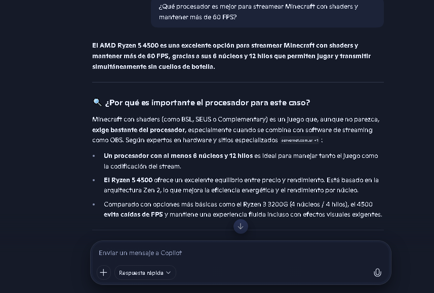
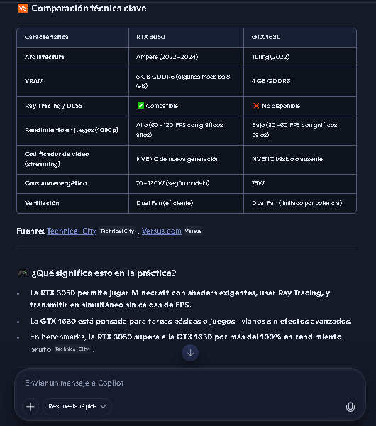
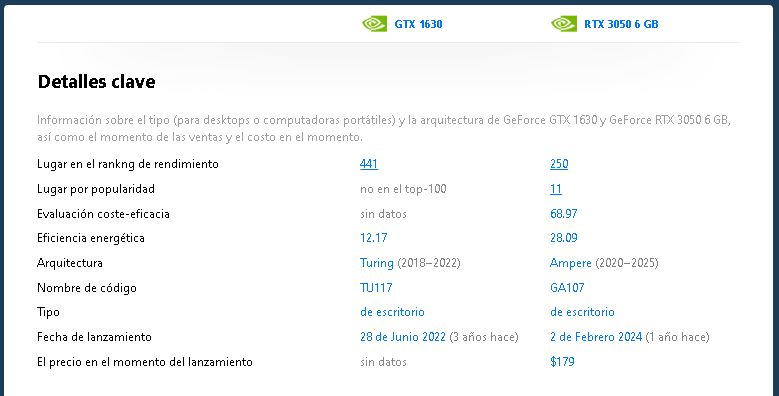
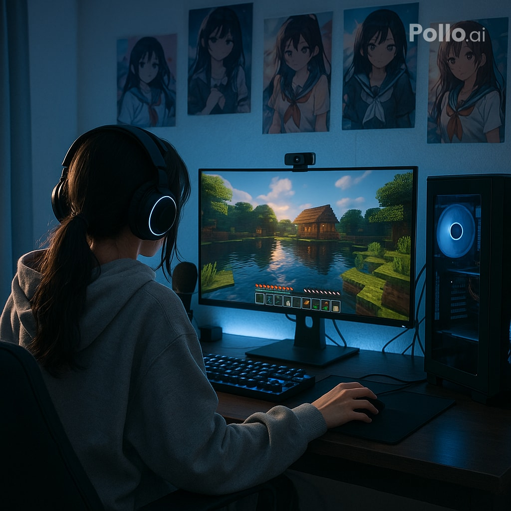
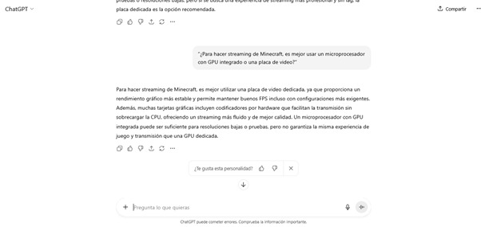
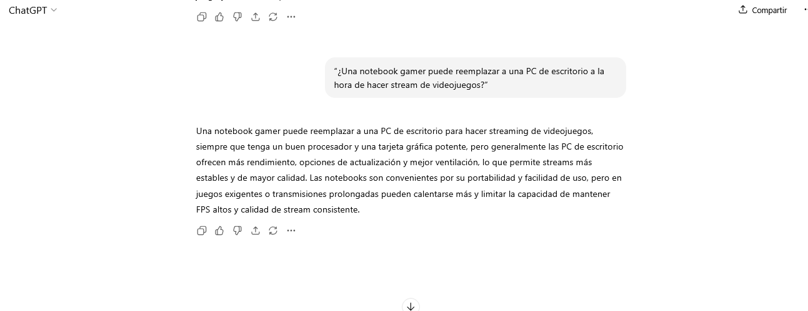
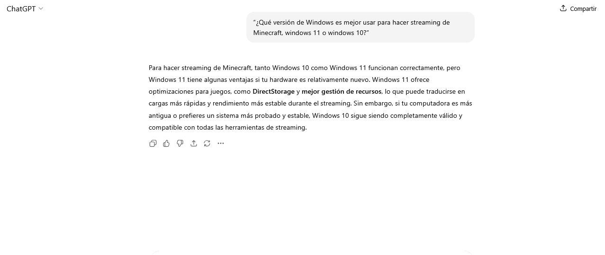
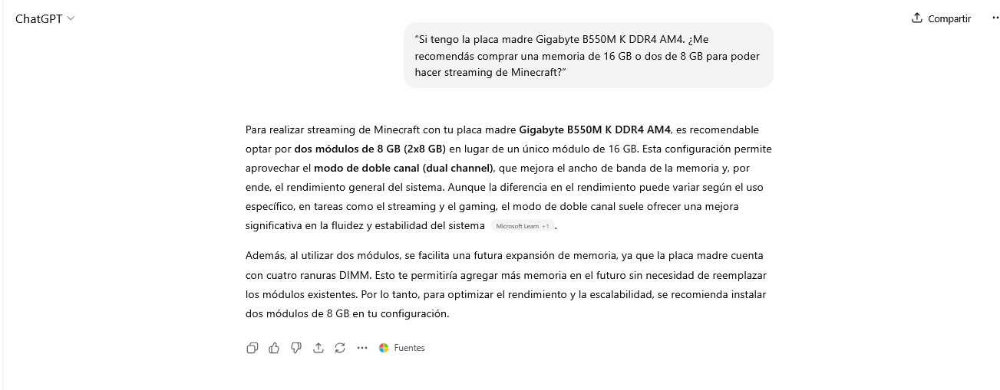
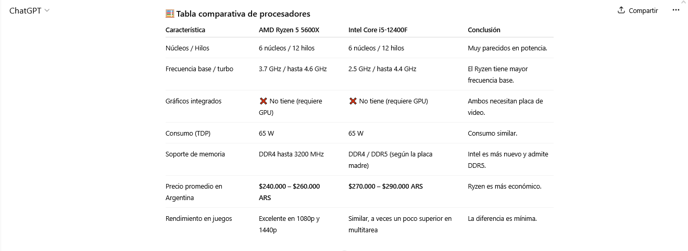
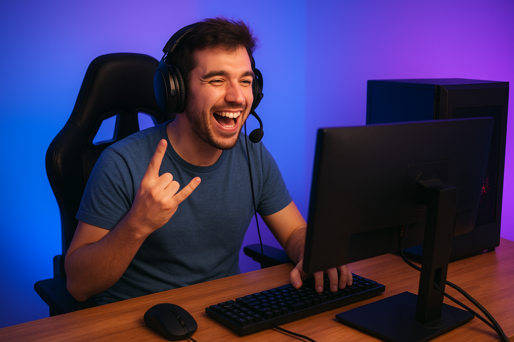

1 - Capturas de interaccion con IA
Le pregunte a Copilot "¿Qué procesador es mejor para streamear Minecraft con shaders y mantener más de 60 FPS?"

Reflexion:
Al haber experimentado Minecraft con Shaders con un Ryzen 5 1600 Af, entiendo como la copilot llego
a esa conclusion y estoy de acuerdo, puesto que el renderizado de chunks era un poco bajo y no se podia
jugar minecraft en simultaneo con un reproductor de musica o el chrome para reproducir Youtube, la calidad
de los FPS disminuia entre 30 y 40 que no es muy comodo para un usuario o espectador, por eso entiendo que
haya hecho esa recomendacion, en complemento con una buena grafica el streaming a 120FPS y 1080 no deberia
ser un obstaculo.
2 - Comparacion de Componentes
Le pedi a Copilot que me compare dos Placas de Video
"Que es mejor? una Placa De Video Asus Geforce RTX 3050 o una VGA MSI GEFORCE GTX 1630 4GB/GDDR6/DUAL FAN/VENTUS"

La tabla comparativa generada por la IA

La fuente que valida los datos obtenidos
En mi caso, elegi la primera ya que sus caracteristicas son mejores, es mas actual y
esta a la venta en casi cualquier sitio web ademas, si fuera a jugar yo sola o con amigos,
sin transmitir tener acciones en simultaneo sin duda elegiria la mas viejita por su bajo costo.
3 - Explicación técnica traducida
Le pedi a la Copilot que me explicara el significado de las siglas GTX y RTX
Explicación de la IA
GTX es una línea de placas de video de NVIDIA pensada para juegos con buen rendimiento, pero sin tecnologías avanzadas como Ray Tracing o inteligencia artificial.
- Buena para juegos en 1080p sin efectos avanzados.
- No tiene soporte para Ray Tracing ni DLSS.
- Más económica y de gama media o entrada.
RTX es una línea más moderna y potente de NVIDIA. Incluye tecnologías como Ray Tracing (luces y sombras realistas) y DLSS (mejora de rendimiento con IA).
- Ideal para juegos exigentes y streaming.
- Incluye núcleos especiales para Ray Tracing y DLSS.
- Mejor rendimiento en gráficos y multitarea.
Explicacion Traducida
GTX de las siglas en ingles (Giga Texel shader eXtreme), es una denominación
de la empresa NVIDIA para nombrar a ciertos modelos de Placas de video, indicando
su tipo de tecnologia. Las GTX son modelos mas viejos de calidad intermedia que
trabaja con graficos tradicionales y es de las mas buscadas por su bajo costo.
La RTX de las siglas Ray Tracing texel eXtreme es la evolución de las GTX
con técnologia mas avanzada en renderizado gráfico, pudiendo simular el comportamiento
de la luz en un entorno 3D lo cual genera efectos visuales mas naturales y detallados.
4 - Imagen generada con IA
Le pedi a Copilot que me generara una imagen de una chica stremeando minecraft con estas especificaciones:
Generar una imagen de una chica en un dormitorio,
jugando en un setup gamer a minecraft con shaders, que tenga posters de anime,
que este stremeando la partida, la chica debe vestir ropa de abrigo olgada y verse de espalas,
tiene que destacarse la computadora y debe verse el juego, con luces tenues
y la decoracion dada por una gama de azules y blancos

La idea de esta imagen era plantear que las chicas
tambien jugamos videojuegos y que no solo los chicos pueden aislarse a jugar en su mundo,
habemos un porcentaje de la poblacion femenina que prefiere quedarse en casa a jugar con amigos.
5 - Conclusiones
En este trabajo la implementación de la inteligencia artificial fue una herramienta
muy importante y muy útil, ya que investigar en foros o en sitios lleva mucho más tiempo. en cambio
la IA puede investigar y codificar con más rapidez y casi sin errores. Es entretenido hacer el
ejercicio de pedir información u otros recursos, debiendo especificar lo que necesitas, aprendí más
que de las veces que tuve que sentarme a investigar por mi cuenta sobre un tema en específico.
Los errores que hubo resultaron ser en el precio de un UPS con determinadas características,
que en las paginas web tenian una variación en el precio y no habia stock o ese articulo ya no estaba a la venta
entonces ahí tuve que recurrir a buscar manualmente.
Personalmente busco información manualmente cuando no se lo que estoy buscando o no se como preguntar
que necesito, como en casos en donde recordas solo una palabra de un titulo de una serie o pelicula y vas probando
hasta que encontras lo que queres, o cuando ves a un actor en una serie y queres saber el nombre pero no sabes como se
llama nada que tenga que ver con él pero si sabes quíen que sí conoces aparece.
1. Capturas de interacción con la IA

Estoy de acuerdo con la respuesta que nos da la IA porque si el microprocesador tiene gráficos integrados,
tiene que hacer todo el trabajo del juego y del streaming, lo que lo hace más lento. La tarjeta gráfica
dedicada se encarga de los gráficos y del video, dejando libre la CPU y la RAM, por eso es mejor para hacer streaming de Minecraft.



2. Tabla comparativa generada con ayuda de IA + validación

Si, mirando páginas como “Hardware Review” y “ProfessionalReview”
los datos coinciden con los proporcionados por la IA.
Elegiría AMD Ryzen 5 5600X, debido a que rinde un poco mejor en los juegos y también cuando hay
varios programas abiertos al mismo tiempo, además es más económico que el otro procesador.
3. Resumen técnico explicado con IA + traducción al “lenguaje común”
Pregunta: “¿Qué son los FPS en streaming?”
Respuesta generada por la IA: "En streaming, los FPS (frames per second o cuadros por segundo)
indican cuántas imágenes se muestran por segundo en el video. Una tasa más alta genera un movimiento más suave
y continuo, mientras que una tasa baja puede producir un video entrecortado o con saltos.
La cantidad de FPS ideal depende de la resolución, la potencia de la PC y el ancho de banda disponible.
Por ejemplo, 30 FPS es suficiente para transmisiones normales, mientras que 60 FPS ofrece una experiencia más suave,
especialmente en juegos de acción rápida"
Versión explicada:
Los FPS serían la rapidez en la que podemos ver muchas imágenes en tan solo segundos,
si la cantidad de imágenes que pasan por segundo son más entonces el videojuego que esté jugando
streamer se vera más fluido, si las imagenes son menor por segundo entonces pasaria lo contrario.
Pregunta: “¿Que es la latencia en streaming?”
Respuesta generada por la IA: “En el contexto del streaming y las comunicaciones digitales,
la latencia es el tiempo que transcurre entre la captura de una señal (video, audio o datos)
y el momento en que esa señal es recibida y reproducida por el espectador.
Se mide en milisegundos (ms) o segundos, y representa el retardo total del sistema,
resultado de la suma de procesos como la codificación, transmisión, decodificación y reproducción.
Una latencia baja es fundamental en transmisiones interactivas —por ejemplo,
videollamadas o streams con chat en tiempo real—, mientras que en emisiones unidireccionales
(como eventos o conciertos) puede tolerarse una latencia mayor si eso permite mantener una mejor
calidad de imagen o estabilidad.”
Versión explicada:
La latencia hace referencia a la cantidad de tiempo que se tarda en mostrar lo que esta sucediendo en tiempo real
en el streaming, hacia los dispositivos de los usuarios que lo están mirando en vivo.
Es recomendable que esta sea baja en transmisiones en donde el streamer interactúe con estos para que haya
una buena comunicación y sea agradable de ver.
Pregunta: “¿Que es el bitrate en straming?”
Respuesta generada por la IA: “En streaming, el bitrate es la tasa de bits o cantidad de datos transmitidos
por segundo en una señal de audio o video. Se mide normalmente en kilobits por segundo (kbps) o megabits por segundo
(Mbps) y determina tanto la calidad visual y sonora como el ancho de banda necesario para la transmisión.
Un bitrate más alto implica una mejor calidad de imagen y sonido, pero también requiere mayor capacidad de subida
y de procesamiento. Por el contrario, un bitrate bajo reduce el consumo de red, aunque puede generar pérdida de detalle,
pixelación o compresión visible.
En la práctica, el bitrate ideal depende de la resolución (por ejemplo, 1080p o 720p),
la frecuencia de cuadros y el códec utilizado, buscando siempre un equilibrio entre calidad y
estabilidad de la transmisión.”
Versión explicada:
El bitrate sería la cantidad de información que se pasa por segundo hacia otro canal de comunicación,
en este caso sería la calidad y sonido del stream a los espectadores, este nos indicará si la calidad
y el sonido que les llega es buena o mala. Si el bitrate es alto el stream se vera y escuchara bien,
si es bajo pasaría lo contrario, el internet es importante pues si el bitrate es más alto que este
probablemente se trabe el video y si es muy bajo se verá borroso.
4. Imagen generada con IA que represente el proyecto
Titulo: “Transmitiendo con lo que tengo a mi alcance”

Prompts: “¿Puedes generar una imagen de un streamer divirtiéndose con sus seguidores usando una PC con componentes económicos?”
El mensaje que me gustaría transmitir con esta imagen es mostrar que no es necesario tener una super computadora
para poder hacer streaming y vivir la experiencia. Muchas personas piensan que solo los streamers reconocidos con
equipos muy costosos pueden transmitir, desanimandolos a la hora de decidirse a empezar , pero en realidad existen múltiples
alternativas accesibles para hacerlo, como notebooks, PC con componentes económicos o incluso celulares.
La imagen busca reflejar que cualquier persona puede empezar a stremear, así también generar comunidades y divertirse haciendo esto.
Conclusiones finales
¿Cómo te ayudó la IA en este trabajo?
¿Detectaste errores o información poco confiable? ¿Cómo lo resolviste?
¿En qué casos preferís buscar información manualmente en lugar de usar IA?
La IA fue de mucha ayuda al realizar el trabajo práctico, debido a que no estoy muy interiorizada
en el mundo del streaming y tampoco entendía cómo funcionaban, ni cuáles eran, ni cómo se relacionaban los componentes de la PC.
Gracias a la IA pude sacarme dudas y comprender conceptos o características de los componentes que al investigar en diversas
plataformas,resultaban muy técnicos, la IA los hacía más comprensibles para una persona como yo. Cabe mencionar que también
me ayudó en la redacción del trabajo.
Si, cuando pedía recomendaciones de componentes de PC la IA sugería los que estaban en tendencia por lo tanto recomendaba
componentes más costosos que se iban del presupuesto asignado, descartando por completo otras alternativas más accesibles
que cumplian con lo requisitos y no se pasaban de este. Para resolver esto opte por ver videos en youtube y recomendaciones en foros.
En el caso de la parte grupal, preferí buscar manualmente para interiorizarme mejor sobre los tipos de programas que usan
los streamers, cómo funcionan y cuáles convienen según el juego que querés transmitir.
También me resultó más útil para identificar opciones económicas de hardware y ver comparaciones reales de rendimiento en distintas plataformas.